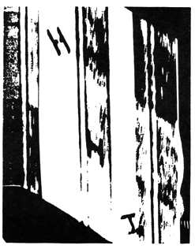

alerts(
MYSTERIOUSLY DEFINING THE MYSTERIOUS: BYZANTINE PROPOSALS OF POETRY
( excerpts from a talk given by Barbara Guest at St. Marks Poetry Project, NYC, June 1986)
We once took a ship from Beirut and sailed along the coast of Turkey which I shall here call Byzantium, as once Constantinople was its center, as once Constantinople was a center of art, learning, poetry, and under the great Constantine held the barbarian at the gates and saved a civilized world, that of the Venetians, to whom we are so much closer with its own relics of religion and art. We think of St. Marks in Venice with its Byzantine domes, as one thinks of the perpetual filming of Venice which brings us the Byzantine optics of wealth and plague as we watched in
Death in Venice.
The Byzantine in Venice is slowly dying and it is a major death, yet this demise shows itself in fragments, just as the poet slowly dies in his or her poem making sure there are fragments remaining of the empire which created the poem, the empire of the poet's soul.
 The ship on which I sailed was on its way to Greece, but first it came into the harbor of Turkish Mersan. In order to enter the harbor we dropped anchor near a Russian freighter, and there were all the signs of excitement on our ship of nearness to a stranger, possibly a barbarian, not the lowly Mersan, but the permanent stranger, Russia, who dominated our imagination.
The ship on which I sailed was on its way to Greece, but first it came into the harbor of Turkish Mersan. In order to enter the harbor we dropped anchor near a Russian freighter, and there were all the signs of excitement on our ship of nearness to a stranger, possibly a barbarian, not the lowly Mersan, but the permanent stranger, Russia, who dominated our imagination.
 We were curious about this port, so we left ship and entered the dingy, sandy town with its scarce trees, like a suburban oasis. But no sooner were we inside the gates than we entered a bazaar. It was an open bazaar--an exciting image--unlike the closed, narrow, sky-covered and awning-covered bazaars of Morocco and Damascus. A supposed simple place where country people had brought their stuffs, as they did in
Jude the Obscure,
the object of these country folk here was a small town of Mersan with
We were curious about this port, so we left ship and entered the dingy, sandy town with its scarce trees, like a suburban oasis. But no sooner were we inside the gates than we entered a bazaar. It was an open bazaar--an exciting image--unlike the closed, narrow, sky-covered and awning-covered bazaars of Morocco and Damascus. A supposed simple place where country people had brought their stuffs, as they did in
Jude the Obscure,
the object of these country folk here was a small town of Mersan with
 [line missing in original]
[line missing in original]
world with decorated cafe umbrellas, but little else.
 It was curiosity that had brought us there and the boredom of a confining ship. Our curiosity was rewarded, for suddenly we were in an open square of pilgrims' wares. Before our eyes were laid golden, silken stuffs of such serious and sophisticated spinning and weaving only to be viewed in the expensive shops of the West. There they lay as if mute rags, palatial silks. Yet to these folk they were the ordinary treasures of a modest life. The poet in us heard singing birds, saw gardens of pruned oranges and ornamental peacocks, heard water fall. The merchants were even guileless in their bargaining, as were we in our astonishment. We bought some of the silk and took it back to our ship and we sailed on with a memory of simple grandeur, as unlikely a mixture as could be found anywhere except in poetry. The silk was turned into curtains and thus began to lead a tamed, domestic existence, its history asleep in our house, much as a poem enters into an anthology.
It was curiosity that had brought us there and the boredom of a confining ship. Our curiosity was rewarded, for suddenly we were in an open square of pilgrims' wares. Before our eyes were laid golden, silken stuffs of such serious and sophisticated spinning and weaving only to be viewed in the expensive shops of the West. There they lay as if mute rags, palatial silks. Yet to these folk they were the ordinary treasures of a modest life. The poet in us heard singing birds, saw gardens of pruned oranges and ornamental peacocks, heard water fall. The merchants were even guileless in their bargaining, as were we in our astonishment. We bought some of the silk and took it back to our ship and we sailed on with a memory of simple grandeur, as unlikely a mixture as could be found anywhere except in poetry. The silk was turned into curtains and thus began to lead a tamed, domestic existence, its history asleep in our house, much as a poem enters into an anthology.
 This experience Keats has shared in one of his early poems, "On First Looking Into Chapman's Homer," which I shall call Byzantine. And we can define Byzantine as that which is convoluted, difficult to track down, complicated. Underneath its apparent surface there is the presence of 'something else.' You can think of this 'something else' as a woman behind a veil. Or you can think of it as architectural complexity disguised as mathematics, as the dome of a Byzantine church. I can appeal to your Byzantine thought with words such as corridors, plots, disguise, whispers, atmospheric treaties with civilization expressed in the abstract. Underlying this rather sinister, and almost indelicate movie-plot, under this disguise is the word I would like to discuss, a word that is as necessary to poetry as the oasis to the traveller, "mystery."
This experience Keats has shared in one of his early poems, "On First Looking Into Chapman's Homer," which I shall call Byzantine. And we can define Byzantine as that which is convoluted, difficult to track down, complicated. Underneath its apparent surface there is the presence of 'something else.' You can think of this 'something else' as a woman behind a veil. Or you can think of it as architectural complexity disguised as mathematics, as the dome of a Byzantine church. I can appeal to your Byzantine thought with words such as corridors, plots, disguise, whispers, atmospheric treaties with civilization expressed in the abstract. Underlying this rather sinister, and almost indelicate movie-plot, under this disguise is the word I would like to discuss, a word that is as necessary to poetry as the oasis to the traveller, "mystery."
 I would like to borrow from Mallarmé, an enduring phrase, an introduction to mystery, "Not the thing, but its effect." This "effect" is what I have been leading to with my curtains from Mersan. The "thing" is the poetic process which gives off without notice an effect which is the poem. Each, the process and the effect, go on about in disguise, they must be uncovered, found out; Chapman's Homer must be opened by the poet.
I would like to borrow from Mallarmé, an enduring phrase, an introduction to mystery, "Not the thing, but its effect." This "effect" is what I have been leading to with my curtains from Mersan. The "thing" is the poetic process which gives off without notice an effect which is the poem. Each, the process and the effect, go on about in disguise, they must be uncovered, found out; Chapman's Homer must be opened by the poet.
 In whatever guise reality becomes visible, the poet withdraws from it into invisibility. In the cloak of Byzantine colors the poet spins a secret life. The poem is the unburdening of the ghosts which have come to haunt, after the trip to the labyrinth. These are ghosts, not words, they are the effulgencies of the mystery that surrounds and decorates the poet like a halo rescued from life. And it is the poet's halo that we must see within the poem, not the full dress of rhyme or structure, or vers libre. Not the artifice of landscape or the hotels of verse. Shelley liked to think of spirits hid in clouds, and Byzantine poets imagined genies escaping from bottles, and Blake drew angels. Marianne Moore said that what must be present in poetry is "an impassioned interest in life's creative secret." "Awe" and "Secret" are brought to us by that Spirit "hid in a cloud."
In whatever guise reality becomes visible, the poet withdraws from it into invisibility. In the cloak of Byzantine colors the poet spins a secret life. The poem is the unburdening of the ghosts which have come to haunt, after the trip to the labyrinth. These are ghosts, not words, they are the effulgencies of the mystery that surrounds and decorates the poet like a halo rescued from life. And it is the poet's halo that we must see within the poem, not the full dress of rhyme or structure, or vers libre. Not the artifice of landscape or the hotels of verse. Shelley liked to think of spirits hid in clouds, and Byzantine poets imagined genies escaping from bottles, and Blake drew angels. Marianne Moore said that what must be present in poetry is "an impassioned interest in life's creative secret." "Awe" and "Secret" are brought to us by that Spirit "hid in a cloud."
 In
My Emily Dickinson
(I am fond of that "My"), Susan Howe has quoted Dickinson as confessing about reading a poet (who might have been Elizabeth Barrett Browning, a poet who sought mightily in her work for that "awe," who although passionate was singularly unimpassioned, and whose work is flawed by the heaviness of her search for mystery): "Did you ever read one of her Poems backward, because the plunge from the front overturned you? I sometimes (often have, many times) have--A something overtakes the Mind--" There speaks the true critic, and for my purposes I note that Dickinson took a very Byzantine turn, to reach the poem's kiosk. "A something overtakes the mind."
In
My Emily Dickinson
(I am fond of that "My"), Susan Howe has quoted Dickinson as confessing about reading a poet (who might have been Elizabeth Barrett Browning, a poet who sought mightily in her work for that "awe," who although passionate was singularly unimpassioned, and whose work is flawed by the heaviness of her search for mystery): "Did you ever read one of her Poems backward, because the plunge from the front overturned you? I sometimes (often have, many times) have--A something overtakes the Mind--" There speaks the true critic, and for my purposes I note that Dickinson took a very Byzantine turn, to reach the poem's kiosk. "A something overtakes the mind."
 The Byzantine aspect is a preference for abrupt connections with the remote in order to establish a concrete interior or coastal connection. It longs for a poetry of regions, not regionalism, for a poetry that can embark on ships and find its way to a settlement where a commodity such as silk is respected, and with an ability to exchange its contour for a curtain without losing an identity imposed by the bartering of one idea for another. There is nothing mandarin in this search for the instinct, or "inner sound," which withholds itself from the promises of merchants and permits a common marketplace to examine its value.
The Byzantine aspect is a preference for abrupt connections with the remote in order to establish a concrete interior or coastal connection. It longs for a poetry of regions, not regionalism, for a poetry that can embark on ships and find its way to a settlement where a commodity such as silk is respected, and with an ability to exchange its contour for a curtain without losing an identity imposed by the bartering of one idea for another. There is nothing mandarin in this search for the instinct, or "inner sound," which withholds itself from the promises of merchants and permits a common marketplace to examine its value.
 The inner sound of the poet protects the poet. Delacroix wrote that painters of marine-life do not represent the sea satisfactorily. "They want to show too much science, make portraits of waves, as landscapists make portraits of trees." His argument was that these seascapes do not concern themselves with the effect on the imagination, as they are absorbed by the details which "turn the mind away." Why? Because this mind filled with details, this poet whose sole urgency is his subject matter neglects the immensity of the depth to be rendered by Art. The depth is the mystery.
The inner sound of the poet protects the poet. Delacroix wrote that painters of marine-life do not represent the sea satisfactorily. "They want to show too much science, make portraits of waves, as landscapists make portraits of trees." His argument was that these seascapes do not concern themselves with the effect on the imagination, as they are absorbed by the details which "turn the mind away." Why? Because this mind filled with details, this poet whose sole urgency is his subject matter neglects the immensity of the depth to be rendered by Art. The depth is the mystery.
 Silk which has made sacrifices to art by concealing its leopard beauty recognizes its value. The silk understands the merchant desire to display everything, and with a Byzantine preference for the hidden noise of fabric lowers its eyes, gazing into the mysterious deep.
Silk which has made sacrifices to art by concealing its leopard beauty recognizes its value. The silk understands the merchant desire to display everything, and with a Byzantine preference for the hidden noise of fabric lowers its eyes, gazing into the mysterious deep.
Barbara Guest reads selections from her books of poetry: Poems, The Blue Stairs, Moscow Mansions, The Countess from Minneapolis, and The Türler Losses on the recently released "tape-book," The Location of Things, from Watershed Tapes, Signature Series, produced by Anne Becker.

from CIPHER by ANNA CUSENZA